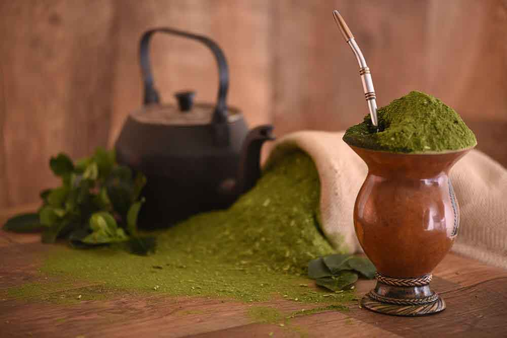

A gastronomia em Gramado é um ponto turístico por si. As especialidades da culinária alemã, italiana e colonial fazem parte do itinerário da maior parte dos viajantes. Produtos artesanais, uma grande herança da culinária europeia e toda a versatilidade da culinária contemporânea ajudam a mostrar os motivos pelos quais a gastronomia em Gramado é tão querida e desejada. Assim, independentemente do que você estiver à procura, com uma boa caminhada através das ruas de Gramado você já se depara com dezenas de opções com todo tipo de especialidade.
Chimarrão
O chimarrão (do espanhol rioplatense "cimarrón"), ou mate (do quíchua "mati") é uma bebida característica da cultura do Cone Sul legada da cultura indígena (caingangue, guarani, aimará e quíchua), produzido pela infusão da planta erva-mate moída em água quente a aproximadamente 70 graus Celsius, em uma cuia com uma bomba.

Propriedades medicinais e nutritivas
Estudos detectaram, na bebida, a presença de muitas vitaminas, como as do complexo B, a vitamina C e a vitamina D, e de sais minerais, como cálcio, manganês e potássio. Combate os radicais livres. Auxilia na digestão eproduz efeitos antirreumático, diurético, estimulante e laxante.
Não é indicado para pessoas que sofrem de insônia e nervosismo, pois é estimulante natural. Contém saponina, que é um dos componentes da testosterona, razão pela qual melhora a libido.
Fondue
Fondue (fundida) é um prato de origem suíça, originalmente à base de queijo aquecido sobre uma lamparina, também conhecida como espiriteira ou rechaud, ou outra fonte de calor pouco intenso..jpg)
Fondue de chocolate.
Consiste basicamente em uma mistura de queijos (normalmente Gruyère e Emmental) fundidos com vinho (ou, como na receita original, aKirschwasser alemã), que vai à mesa acompanhada de pedaços de pão, batatas noisettes e legumes cozidos, ou com a guarnição de sua preferência.
Esses acompanhamentos devem ser mergulhados na fondue com um garfo comprido para ficarem cobertos com o queijo fundido.
Em Gramado os restaurantes que oferecem a iguaria a servem à la carte, pedindo uma fondue de cada tipo por vez, ou na chamada sequência de fondue, composta por três etapas: fondue de queijo, fondue de carne e fondue de chocolate.
.jpg)
Café colonial
O café colonial é uma refeição de tradição germânica, que compreende uma gama variada de bebidas e comidas, doces e salgadas. Embora muita gente pense que se trata exclusivamente de um café da manhã, o café colonial pode ser (e é) servido em diversos outros momentos do dia. Em Gramado, o café colonial é servido praticamente o dia inteiro nas casas especializadas e, no café da manhã de alguns hotéis..jpeg)
Então o café colonial em Gramado é um programa que não pode faltar no roteiro durante uma viagem à cidade, especialmente para aqueles que gostam de refeições fartas e visitam Gramado pela primeira vez. A refeição, tradicional e muito característica do Sul do Brasil, é já bastante conhecida e difundida na região.
.png)